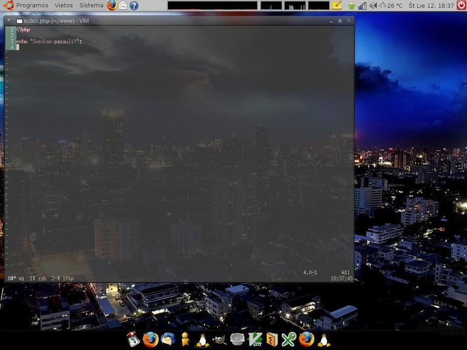

Web programavimas Ubuntu aplinkoje
Jau senai planavau pasipasakoti kokias priemones naudoju Web programavimui, Ubuntu sistemoje.
O priemonės yra tokios:
{kind=link}
Kaip matote paveiksliuke, darbo laukas tikrai neperkrautas visokiais griozdiškais GUI… :)
xterm
Paprastas ir labai greitas terminalo emuliatorius.
vim
Teksto redaktorius, dažnai dar vadinamas „programuotojų teksto redaktorius“. Ubuntu pagal nutylėjimą turi primityvią vim versiją, todėl reikėtų įdiegti pilną versiją:
sudo apt-get install vim-full
zsh
Lankstus ir patogus komandinės eilutės interpretatorius (shell).
sudo apt-get install zsh
lftp
FTP klientas, veikiantis komandinės eilutės režimu, palaiko FTP, SFTP, HTTP ir t.t. Klientą galima įdiegti taip:
sudo apt-get install lftp
php-shell-cmd
Kad galėčiau greitai patikrinti kokias nors PHP funkcijas, naujuosi šiuo PHP interpretatoriumi. Jį galima gauti iš PEAR repozitoriumo:
sudo pear install PHP_Shell
Tiek trumpai apie darbo priemones, o dabar trumpai papasakosiu situacijas, su kuriomis tenka susidurti.
Web aplinkos diegimas (apache, php, mysql)
Ubuntu turi paketų sistemą, kurios dėka, šis žingsnis apsiriboja iki vienos komandos:
sudo apt-get install apache2 php5 mysql-server
Po šio žingsio DocumentRoot katalogas rodo į /var/www/, tačiau man patinką šį katalogą persikelti į savo namų katalogą. Tai galima padaryti labai paprastai:
sudo mv /var/www ~ sudo chown -R www-data:sirex ~/www cd /var sudo ln -s ~/www
PHP kompiliavimas
Dirbant su PHP, karts nuo karto tenka susikompiluoti PHP taip, kad būtų įjungti arba išjungti tam tikri moduliai ir pan. Taip pat, kartais reikia įsidiegti ir naujausią PHP versiją, kurios dar nėra Ubuntu repozitoriumuose.
Ubuntu aplinkoje yra paruoštų daug priemonių, kurių pagalba kompiluoti PHP yra visiškai nesudėtinga. Jei noriu įsidiegti naujausią PHP versiją, kurios dar nėra Ubuntu repozitoriumuose:
apt-get install build-essential debhelper devscripts fakeroot mkdir /tmp/php && cd /tmp/php apt-get source php5 sudo apt-get build-dep php5 wget http://lt2.php.net/get/php-5.2.6.tar.gz/from/this/mirror tar -xzf php-5.2.6.tar.gz mv php-5.2.6 php5-5.2.6 mv php-5.2.6.tar.gz php5-5.2.6.orig.tar.gz cp -vr php5-5.2.4/debian php5-5.2.6 cd php5-5.2.6
Šioje vietoje, faile debian/rules galima keisti kompiliavimo nuostatas, įjungti/išjungto modulius ir t.t. ir t.t.
dch -i